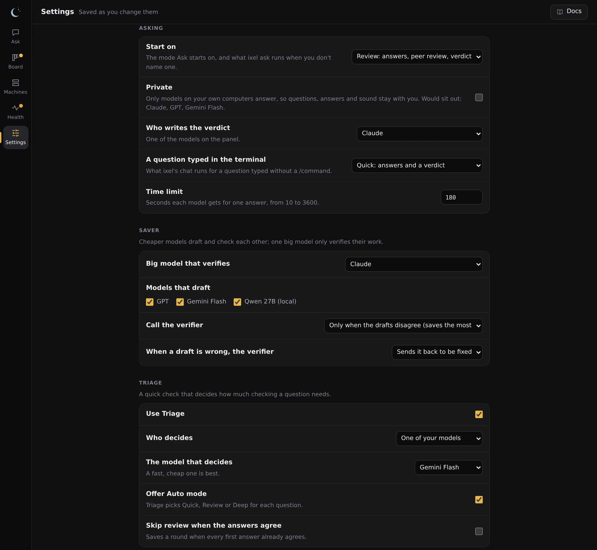

Set up your models
Ixel has no models of its own. It uses yours: API keys, the subscription programs you're already signed in to, and models running on your own computer. Mix them freely; a panel holds up to eight.
What Ixel can use
| Kind | Which | Paid how |
|---|---|---|
| API keys | OpenAI, Anthropic, Google Gemini and xAI (Grok) | Per token, on your account with that company |
| Subscription programs | Claude Code, Codex, Gemini CLI, GitHub Copilot, OpenCode | Your plan with that company; no API key needed |
| Local models | Ollama, LM Studio, or any server that speaks the OpenAI chat API | Free: they run on your own hardware |
| Other models | DeepSeek, Kimi, GLM, MiMo and others, through OpenCode or their own API | Their company's prices |
With two models, a disagreement is a tie. If you have fewer than three, ixel setup shows what you can add at no cost: Gemini CLI (free with a Google account) and Ollama (open models on your own computer).
Run ixel setup
In a terminal:
ixel setupIt walks you through the rest, and you can press Enter to keep each default or answer n to skip:
API keys
For OpenAI, Anthropic, Google Gemini and xAI, paste a key if you have one. You type it hidden, Ixel checks it with the company, and saves it to
~/.config/ixel-mat/.env, a file only you can read. For each one you pick a model; the default,latest, is that company's newest top model.Your subscription programs
If Claude Code, Codex, Gemini CLI, Copilot or OpenCode is installed, it offers to add it. Sign in to each one first, in the program itself.
Local models
If Ollama, LM Studio or another model server (llama.cpp, vLLM, Jan, GPT4All, KoboldCpp) is running on this computer, its models are listed, and you add the ones you want with no key. It also offers to add models on another of your computers, by its name or address. Local models has more.
How you like to ask
Your default mode, who writes the verdict, and what happens when you type a question without a command.
Saver and Triage
Which model verifies in Saver mode, and whether to turn on Triage. Both are explained under the jobs on your panel.
When it's done, check everything works:
ixel status # keys checked with each company, and each model's connection
ixel doctor --check # every part of Ixel, and asks each model's server whether it answersixel setup keeps what it doesn't ask about: models you added by hand or in the app (it lists them and asks first), each model's effort and pictures settings, and the choices you made in the app, such as which models sit on the panel. It writes the file afresh, so comments you wrote in it aren't kept; the file from before is kept beside it as config.toml.bak. To change a model you already have, Settings in the app or ixel model is quicker.
API keys
Each company gives you a key in its own console. Ixel sends a key only to the company it belongs to, over HTTPS.
| Company | Get a key | Saved as |
|---|---|---|
| Anthropic (Claude) | console.anthropic.com | ANTHROPIC_API_KEY |
| OpenAI (GPT) | platform.openai.com | OPENAI_API_KEY |
| Google (Gemini) | aistudio.google.com | GOOGLE_API_KEY |
| xAI (Grok) | console.x.ai | XAI_API_KEY |
You can also paste, replace or remove a key in the app, under Settings, Keys. It's never shown again once saved. A key set in your system or shell wins over one saved in Ixel, and the page says so.
Subscription programs
These use the plan you already pay for, not API credits. Install the program, sign in to it once on its own, then run ixel setup.
| Program | Uses | Install |
|---|---|---|
| Claude Code | Your Claude Pro or Max plan | npm install -g @anthropic-ai/claude-code |
| Codex | Your ChatGPT plan | npm install -g @openai/codex |
| Gemini CLI | Your Google account, or a free Gemini API key saved in Ixel | npm install -g @google/gemini-cli |
| GitHub Copilot | Your Copilot plan | npm install -g @github/copilot |
| OpenCode | Whatever you've signed in to in OpenCode (not its free tier, which turns Ixel down) | npm install -g opencode-ai |
On the panel they only answer: each runs in a fresh, empty folder with its tools switched off, so it can't run commands or change your files. Privacy has the details. ixel status checks that each one is installed, not that you're signed in; if its answers come back as a login error, run it once on its own and sign in.
Other models
Two ways to add a model from a company Ixel doesn't set up for you:
- Through OpenCode. OpenCode can sign in to many companies. Set it up with the model you want, then add OpenCode in
ixel setup. - Through its company's API, if it speaks the OpenAI chat API (most do). Add it to
~/.config/ixel-mat/config.tomlby hand, with the full address ending in/v1/chat/completions, and put its key in~/.config/ixel-mat/.envunder the name you give intoken_env:
[agents.deepseek]
type = "http"
url = "https://api.deepseek.com/v1/chat/completions"
token_env = "DEEPSEEK_API_KEY"
model = "deepseek-chat"
label = "DeepSeek"The address and model name here are an example: use the ones the company's own docs give. Give the model by name: latest works only for OpenAI, Anthropic, Gemini and xAI.
The jobs on your panel
Every model on the panel answers and reviews. A few jobs go to one model, and you choose which in Settings in the app (or in config.toml). Which model for each job has picks from a benchmark.
| Job | What it does | Where you set it |
|---|---|---|
| Writes the verdict | Reads every answer and every review, and writes the final answer, saying where the panel disagreed. Unless you pick one, it's the author of the best-rated answer. | Settings, Asking: Who writes the verdict[review] moderator |
| Big model that verifies | In Saver mode, checks the cheaper models' drafts and replies in a few words: confirmed, or what's wrong. It writes an answer only if you tell it to fix wrong drafts itself. | Settings, Saver: Big model that verifies[saver] verifier |
| Models that draft | In Saver mode, answer and review each other before the big model looks. Every model but the verifier, unless you choose. | Settings, Saver: Models that draft[saver] drafters |
| Decides, in Triage | Answers short questions between rounds: how much checking a question needs (for Auto mode), and whether the answers agree. Off unless you turn it on. | Settings, Triage[triage] agent, or provider = "typesafe" |

Who decides, in Triage
- One of your own models. Pick a fast, cheap one. No new account, and nothing goes anywhere your panel doesn't already. Its confidence is its own estimate, so leave "Skip review when the answers agree" off, or keep its threshold high.
- TypeSafe's decision API. Built for exactly this: calibrated answers in about a second, for a fraction of a cent. It needs your own TypeSafe key, and sends TypeSafe your questions and the models' answers (never your other keys, or which model wrote what). Get the key only from typesafe.ai itself.
Change a model
In the app, Settings, Models lists each model on your panel. Pick its model from a list: the company's own list when Ixel has a key for it, the models OpenCode already knows, what your local server has, or a list built into Ixel (which says it may be out of date). Other… takes any name. In a terminal, ixel model does the same:
ixel model # every model on your panel, and what "latest" means today
ixel model opus # the models that one can use
ixel model opus latest-fast # change itlatestis the company's newest top model, looked up from your account each time Ixel starts, so a new release is used the day it comes out.latest-fastis its newest small, fast one, a good drafter.- For a subscription program, leaving the model empty uses the program's own default, which its maker keeps current.